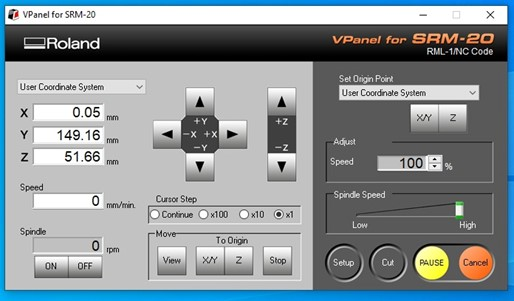
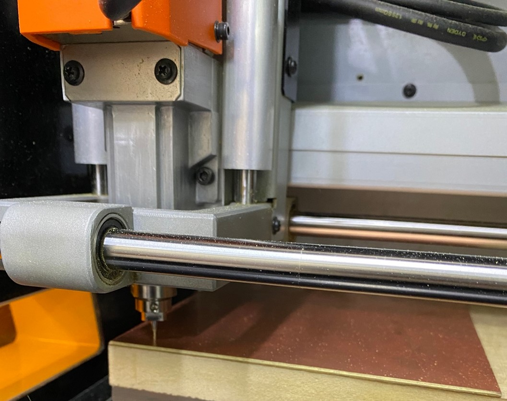

Welcome to Week 4
Electronics Design
Hello! this time, let’s learn about Electronics Design.
The milling machine we have at Continental University is the MONOFAB SRM-20 that we will use for this week's work. Below are some specifications of the machine:
Before starting to cut the test we have to start with the preparation of the cutting area. Therefore, first we place the double contact tape on a small board so as not to work on the base of the machine, which is made of metal and can damage the cutters.
| WORK SURFACE | 232.2 x 156.6 mm |
|---|---|
| OPERATING SPEED | 6 mm/min to 1.800 mm/min |
| POWER CONSUMPTION | 50 w |
| SPINDLE ROTATION SPEED | 3.000 RPM to 7.000 RPM |
Before starting to cut the test we have to start with the preparation of the cutting area. Therefore, first we place the double contact tape on a small board so as not to work on the base of the machine, which is made of metal and can damage the cutters.
After you have successfully glued the circuit board. We begin to configure the X, Y and Z axes of the MONOFAB. To do this, we first start by configuring the X and Y axes where we want to start working. When configuring the Z axis we have to be careful because we can break the milling cutter if we don't do it right.
After obtaining the correct location of the X, Y and Z axes, we click on SET ORIGIN since it will be the new origin of the machine and it can begin cutting. That is where all the values will change to 0.00 mm and we would have the machine ready to start working.

We will start with the line test, where we will carry out the procedure, first we will do the milling and then the cutting. For this first step we have to open the virtual program MODS PROJECT, which is the program we use before moving to the machine program.
The first thing you should make sure is that the bur is not worn out, the result is obviously not good, when I saw this, I ordered a new bur, and with this new bur I did a new test
We can see that we have a good result and a precise cut starting from 0.006” which is equivalent to 0.152mm, and a separation of 0.02” which is equivalent to 0.508mm, approximately, the objective that was requested of us for the group work. We understood the processes, configurations and were able to obtain our board test.
NOW, LET'S DO IT!
I decided to use EasyEDA due to some not so technical factors, to begin with I was used to using Proteus, but it is not a software that Fab Academy considers in its resources (if you want to review the Fab Academy information I leave the link here), but I did find EasyEDA on the list and I had heard of it before, and it is also used in my university, besides that it is an online editor, and I did not want to struggle with any software to install, the sum of these factors made me decide to explore and use it.
With patience we can form our circuits.
Remember: the width of the trace on our PCB depends on the current that will be stopped, for 0.5mA we can use 0.3mm or 0.012” approx. Calculate this value with the PCB Trace Width Calculator, our machine can perform this job without problems since the minimum we can ask for is 0.006”.
Once the circuit is completed we have to design the PCB, for that we have the following option.
Here we will be shown the components that we use, and we must position and connect them.
Well, now we are going to export our design.
Let's file and then export,
We select the layers that we want to export, in my case the top layer, when clicking on export a file will be downloaded (in my case SVG)
We take that file to MODS PROJECT and then we generate the file for CNC milling.
In the program we can preview how the plate will look.
Now we will pass it to the machine program
We place the plate on the base and do the calibration procedure in the 3 axes.
The spawning process can be seen in the following video, at the end we will obtain the final result.
We vacuum and remove the plaque:
After obtaining the microcontroller board, we proceed to solder all the parts it needs for its operation.
And We start!! Remember! In this process we must be careful not to damage the tracks of the plate.
Finally, we have the microcontroller ready, now we move on to programming it.
We upload a test base programming code, through the Arduino program:
That`s All my friends, see you later.